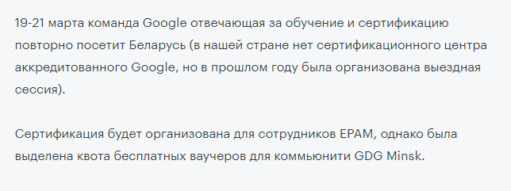

Друзья, сроки сегодняшней новости настолько сжаты, что даже поздороваться времени нет – сразу к делу:
Минское сообщество Google Developer Group (GDG) запускает серию митапов по Google Cloud и завтра, 26 февраля, состоится первый такой митап!
Встреча состоится в офисе компании Epam по адресу: г. Минск, ул. Притыцкого 27а
Так что, не станем мучительно вспоминать, что означает Облако в штанах
,
и сразу перейдем
на страницу с подробным описанием мероприятия
А от туда – на форму регистрации
Регистрация обязательна, но сама встреча бесплатна, и никаких дополнительных условий (типа, только студенты, или только сотрудники, или конечно приходите, но перед этим решите 18 тестовых заданий) нет. Более того, хоть времени и осталось совсем чуть-чуть, но регистрация все еще доступна.
Ну, я надеюсь, что вы уже зарегистрировались, поэтому, если есть минута, я могу вам немножко воды налить, на тему того, почему, на мой взгляд, это мероприятие стоит вашего внимания.
Во-первых, здравствуйте, конечно
А во-вторых, это не мои аргументы, а, скорее, объяснение для моих студентов.
Дело в том, что на данный момент группа, в которой я веду занятия – это люди, которые только-только начали изучать JavaSE.
И, конечно, после прочтения фразы Митап по Google Cloud от Google Developer Group»
у вас возникает резонный вопрос:
Какой, нахрен, клауд? Ты нам даже тему по ООП еще не объяснил!
Я гугл сейчас использую только для того, чтобы понять – какого черта я постоянно пишу это долбаное слово static?
И, знаешь, гугл хоть и непонятно объясняет, но он объясняет хотя бы!
А не отмораживается фразами чайфа – «Вы просто поверьте, а поймете потом»!
И я согласен с вами – претензии справедливы. Есть большая вероятность, что из всего сказанного за два часа вы поймете только фразы:
Здравствуйте...
и
До свидания! Будем рады видеть вас снова...
Но, все же, вот мои аргументы, почему вам стоит идти:
1. Аутотренинг. Здесь мое классическое объяснение, которое я использую в любой такой новости. Не важно, что вы не понимаете, о чем идет речь докладе. Если вы твердо решили стать разработчиком, вы должны быть в этой тусовке. Вы должны тупо заставлять свой мозг слушать неизвестные для вас IT-слова. Со временем эти слова, так или иначе, сложатся во вполне осознаваемые вами предложения и абзацы. Короче, вы изучаете программирование, значит, вы должны слушать программистов. Другого пути у вас нет!
2. Актуальности темы.
Друзья, когда я рассказываю вам про космические корабли, типа AI, ML, IoT
и прочее, я, конечно говорю,
что это наше будущее, но по сути – я просто внаглую тащу вас на страницы своего суперпопулярного сайта!
Потому что 24 посещения за месяц сами себя не сделают
.
Но в этом случае, ситуация другая. Облака – это не наше будущее. Это уже давно и плотно – наше настоящее.
На какую бы работу вы не пришли, ваш Team Leader, при вводе в проект обязательно упомянет какой-нибудь
Amazon Cloud, Google Cloud, Oracle Cloud или Azure
. Упомянет не раз.
И вот чтобы в этот момент не смотреть на своего первого руководителя, как баран на новые ворота,
давайте лучше все вместе посмотрим таким взглядом на завтрашних докладчиков
3. Хороший первый доклад. По крайней мере, заявленная тема. Посмотрите, нам обещают, что:
На примере простого web-приложения будет проведено знакомство с Google Cloud Platform:
Google Compute Engine, Google Kubernetes Engine, Google App Engine и другими ее частями.
Реально есть большие шансы, что этот доклад станет для вас чем-то вроде введения в специальность, где все будет ясно и понятно. И после того, как вы получите мягкое введение, вам будет проще развить интерес в изучении этой не простой темы.
Насчет второго доклада я ничего предполагать не могу, так как в разработке чат-ботов совершенно не силен.
4. Серия. Нам обещают, что это только первый митап из целой серии встреч по этой теме. А это значит, что у нас есть возможность пройти мини-курс (пусть и не совсем традиционный с академической точки зрения) и пройти его бесплатно.
5. Сертификация. Ну тут я не стану вам врать – вряд ли, к концу марта, когда к нам приедут специалисты из Google, вы будете готовы сертифицироваться. Скорее всего (да 100%, чего уж там) – я и сам не буду к этому готов. Но, как бы там ни было, ребята обещают нам:

6. И наконец, самое главное, пусть и самое циничное – ваша карьера.
Ребята, почитайте внимательно – встреча проходит на территории Epam-а, в коридорах Epam-а, по которым, скорее всего,
будут ходить сотрудники Epam-а.
А вдруг один из этих сотрудников будет вас собеседовать через пару месяцев? А у вас (ну так совпало) – очень запоминающееся лицо...
В общем, надеюсь я вас убедил. А если нет, предлагаю вам посмотреть научно-популярное видео о том, как еще во времена Советского Союза облачным технологиям уделялось самое пристальное внимание. Приятного просмотра, и до встречи завтра!